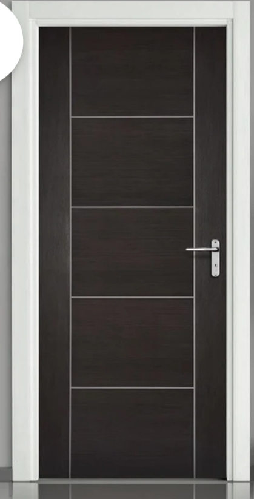
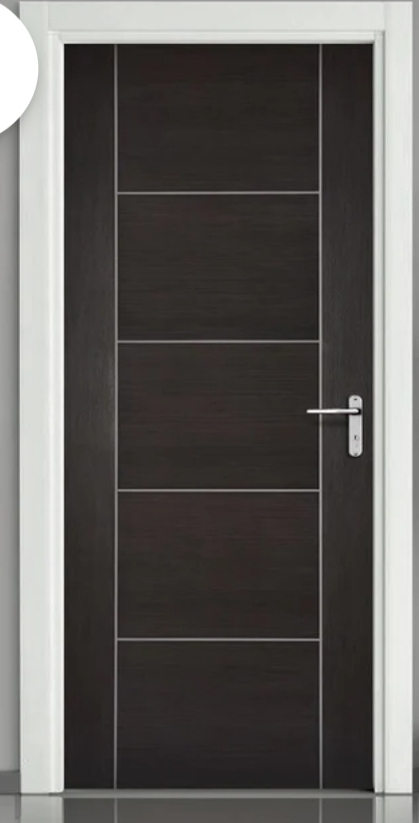

The rating guidance of
the doors
Fire ratings provide you with guidance regarding safety issues. The main purpose of these ratings is to assess the durability of materials used to contain fire within an area while maintaining structural integrity.
Also, these ratings are useful because they help determine if a constructed site can provide occupants with sufficient time to vacate the area. You may have noticed minutes or hours as a way of indicating fire rating labels on fire doors. It is a fire endurance rating that can range from A to C, where C is the lowest fire resistance rating and A is the highest.
Assessments are based on tests taken against time such as 20, 40, 60 or 90 minutes. However, the fire rating does not indicate how long a door needs to withstand a fire. So, a door rated 60 minutes does not guarantee that it will withstand fire for up to 60 minutes.
This means that the door can be held for up to 60 minutes when tested in a controlled environment. In the real scenario, contributing factors such as heat intensity can significantly reduce the estimated time.